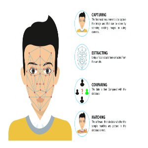

Web developer with 2 years of hands-on experience in crafting responsive and engaging websites and web applications. Proficient in front-end and back-end technologies including HTML, CSS, JavaScript, PHP,Mysql and modern frameworks such as Bootstrap and Chart.js. Passionate about delivering seamless user experiences and excited to bring innovative ideas to life in a collaborative development environment."
Manage the information technology needs and systems of their employers, including implementing database and network designs, installing and upgrading software, ensuring systems security and troubleshooting computer issues throughout their organizations.
Mid-level Technical Support Engineers should aim to deepen their technical expertise while starting to take on more strategic roles. Goals for this stage could include specializing in a particular technology or product line, leading a small team or project, and improving processes to enhance customer satisfaction.
web developer with 2 years of experience in building and deploying robust web-based applications, including CRM systems, dashboards, and both static and dynamic websites. Adept at transforming client requirements into scalable and efficient solutions using modern web technologies. Proven track record of delivering high-quality, user-centric applications that drive business success."

Developed a Face-Detection application using JavaScript, capable of accurately identifying and tracking faces in real-time through the web camera. This project demonstrates expertise in integrating advanced algorithms with front-end technologies to create interactive and practical web solutions
View ProjectCreated a QR-Code generator using Python, enabling users to generate custom QR codes for various purposes, such as URLs, contact information, and more. This project showcases proficiency in Python programming and the ability to deliver efficient, user-friendly tools for everyday use
View ProjectDeveloped a comprehensive Library Management System using PHP and MySQL, designed to streamline the management of library resources, including book inventory, member records, and transaction tracking. This project highlights expertise in back-end development and database management, ensuring smooth and efficient library operations.
View Project